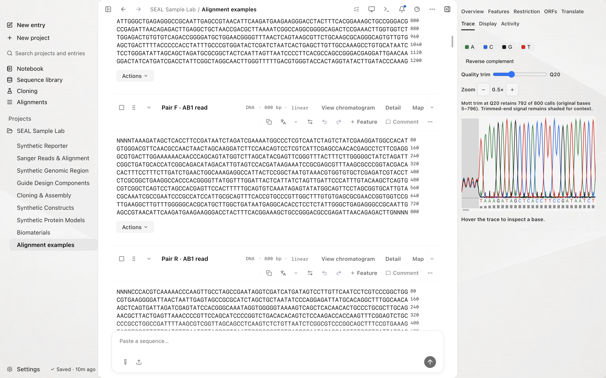

Sanger traces
Screenshots and recordings show the direct edition. Compare editions.
SEAL imports AB1 reads with four-channel chromatograms, called bases, and per-base Phred quality when the file includes it. Open the DNA block to inspect the sequence and its attached trace.
Watch the walkthrough
Open a saved alignment, move between mismatches, and inspect chromatogram peaks.
1:00 · AI narrationDownload video (17.8 MB)English captions
Read the transcript
Click Alignments in the sidebar. The demo workspace includes six saved examples. Open Synthetic Sanger, primer pair and overlapping reads. This example contains a twelve-hundred-base template and two overlapping reads, each with eight hundred base calls.
Expand the alignment to fill the workspace. The rows keep the template and reads in a common coordinate view. Click Next mismatch to jump to a difference instead of searching through every column. Compare the letters in the highlighted region with the surrounding trace peaks and consensus row.
Return from the filled alignment view, then click Open chromatogram. The original read opens with its base calls, colored peaks, and quality information. Use the read name to confirm which trace you are reviewing. The trace panel also reports retained calls at the selected quality threshold. You can move between this original-read view and the saved alignment when checking a discrepancy.
Try the synthetic trace set
Use the saved paired-read example to compare an alignment mismatch with the original chromatogram.
- In the sidebar, open Alignments. If the examples are missing, click Load examples.
- Open Synthetic Sanger — primer pair and overlapping reads. The example has a 1,200 bp template and two overlapping reads with 800 base calls each.
- Expand the alignment to fill the workspace. Keep the template and both read rows visible.
- Click Next mismatch. The example highlights column 601 and shows Mismatch 1 of 1. Compare the called bases, trace peaks, and consensus at that position.
- Exit the filled alignment view, then click Open chromatogram for the forward read.
- Confirm the read name is Pair F · AB1 read. At Q20, the Trace panel reports 792 of 800 calls retained: original bases 5–796. The trimmed ends remain shaded for context.
The alignment compares reads in template coordinates. The chromatogram shows the original read's calls, signal, and quality. Use the read name and coordinates when moving between the two views.
For a larger example, open Synthetic clone — 2.4 kb primer walk with AB1 traces. Six primer-linked reads cover overlapping template regions. Compare the two middle reads at template base 1451, or open an individual chromatogram to inspect its signal and quality.
Choose Download example inputs (FASTA + AB1) to get the source reads and primer sequences. The sequences, channel signals, and quality scores are synthetic software fixtures.
Use Verify against reference to review the calls. SEAL reports a high-quality mismatch as evidence to inspect, never as an automatically confirmed variant. Identity displays 100% only for exact agreement.
Import an AB1 file
Drop a .ab1 or .abi file into the workspace, or use the same import path you use for any other format. SEAL detects the ABIF container and parses it into a DNA block. See Import and export for the full format list.
ABIF is the only trace container SEAL reads.
What the parser takes from the file
A trace is complete when the file carries a valid base order and four equal-length signal arrays. SEAL reads these fields:
| ABIF field | What it becomes |
|---|---|
FWO_1 | The base order, a permutation of A, C, G, and T. It records which base each raw data array belonged to, and is kept as source provenance. |
DATA9 to DATA12 | The four analysed channels, one per base, on a single shared sample axis. |
PBAS | The called sequence, which becomes the block's bases. |
PCON | Per-base quality, 0 to 255. Some files omit it. |
PLOC | The sample-axis position of each called base, so a call can be located in the signal. |
ABIF stores the signal and peak arrays as signed 16-bit values, and SEAL reads them as signed. A file carries two call sets, and SEAL records which one supplied the calls, peaks, and quality: the basecaller's set, or an edited set if the file has one.
Read the chromatogram
Select an AB1 block and open the Trace tab in the workspace inspector. The tab appears only for a block that carries a stored trace, so it stays out of the way for everything else.
The chromatogram draws the four channels along the sample axis, with the called bases marked at their peak positions and a quality strip underneath. It follows the workspace theme, including high contrast.
Channels
Toggle A, C, G, and T independently. Turning three off is the quickest way to read a single channel through a noisy region.
Reverse complement
Switch the view to the reverse strand. This runs the whole trace through one transform rather than flipping the picture: the sample axis reverses, the channel identities swap so A carries what T carried, the peak positions are remapped onto the reversed axis, the quality vector reverses, and the called sequence is reverse-complemented with its IUPAC ambiguity codes preserved. Signal, calls, peaks, and quality stay in agreement.
Quality trim
Move the Quality trim slider to set the Phred threshold. The panel reports the retained calls and their original positions after Mott end trimming. Trimmed-end signal remains shaded for context. Changing the threshold updates the view without altering the block's bases.
When a file omits per-base quality, the slider reads n/a and the quality strip is hidden.
Hover readout
Move the pointer across the trace to read the nearest called base as text: its position in the read, the base itself, the sample index under the cursor, and its Phred score, or Q n/a when the file carried no quality.

Per-base quality in the Overview tab
An AB1 block also gets a quality card in the DNA and RNA Overview tab, alongside composition and the other metrics. It summarises the read at a glance:
- Mean Phred score across the read.
- The percentage of bases clearing Q20, which is 99% base-call accuracy, and Q30, which is 99.9%.
- The median score, the lowest to highest range, and the number of bases.
- A small distribution sparkline.
The card appears only for a block that carries a usable quality array, so it shows for Sanger reads and for FASTQ imports and stays hidden everywhere else. For the separate sequence checks that flag homopolymers, ambiguous bases, and internal stops, see Quality checks.
How a trace is stored
A trace is bulky. Four channels at two bytes each work out to eight bytes per sample, and a routine read runs to tens of thousands of samples. SEAL splits the record so that weight never sits on the path that loads your workspace.
Where each part of a trace lives
The GCTR payload
The channel signal is written in a compact versioned binary format. It opens with a sixteen-byte header carrying the magic string GCTR, a format version, the channel count, and the sample type, followed by the samples interleaved in A, C, G, T order as little-endian signed 16-bit values.
Decoding reads the values explicitly rather than casting the buffer, so a workspace written on one machine reads back the same way on another regardless of its byte order.
Backups and exports carry the trace
The trace sidecar travels with the workspace. A portable backup carries each electropherogram inside the envelope with its GCTR payload encoded as text, because the backup format is JSON and JSON has no binary type. The live workspace keeps the raw bytes, and a restore decodes them back. A workspace you export and import elsewhere keeps its chromatograms.